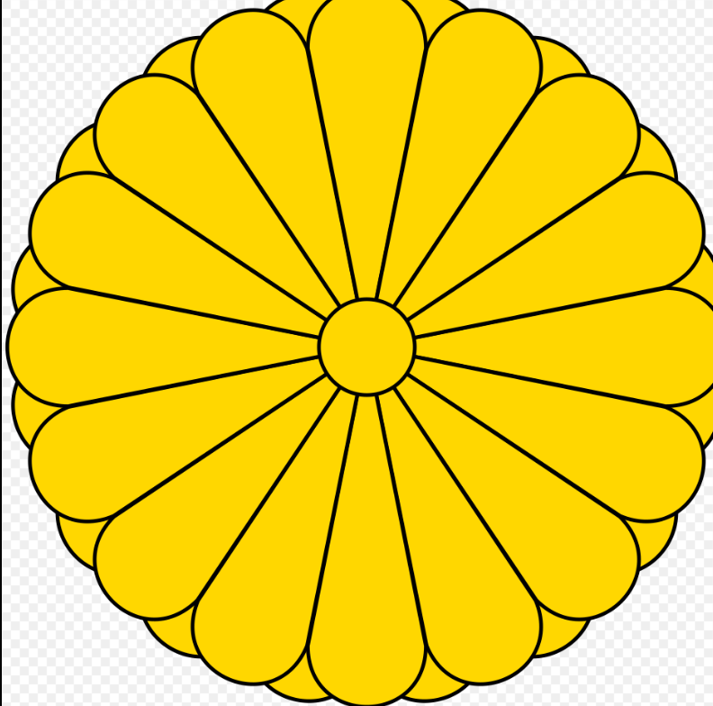

Japan (Nihon/Nippon) is an East Asian island nation in the Pacific Ocean, an archipelago of 14,125 islands — four major ones (Hokkaido, Honshu, Shikoku, Kyushu) plus the Ryukyu chain — spanning over 3,000 km. Its capital and largest city is Tokyo, and it is a constitutional monarchy with Naruhito as ceremonial head of state and Sanae Takaichi (in office since October 2025) as head of government. Population: ~123 million (2026), declining; Japanese nationals fell below 120 million in 2026 for the first time in 42 years Economy: 4th largest by nominal GDP (~$4.0 trillion); a global leader in automotive, electronics, and robotics Geography: ~75% mountainous, sitting on the Pacific Ring of Fire; highest peak is Mount Fuji